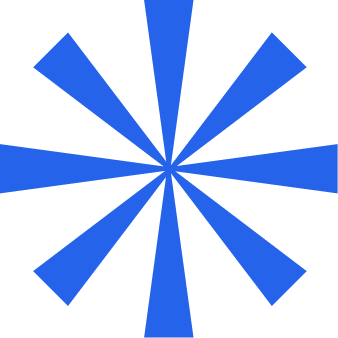
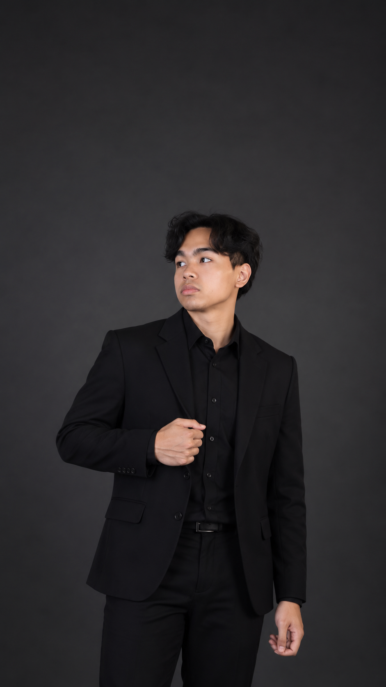
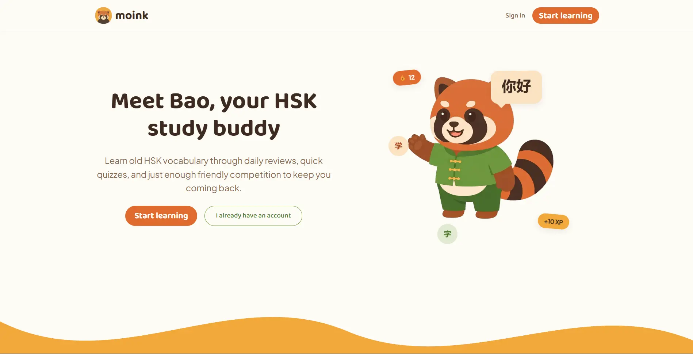
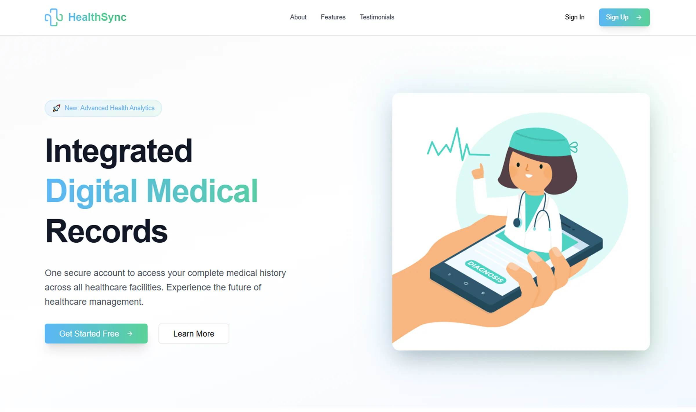
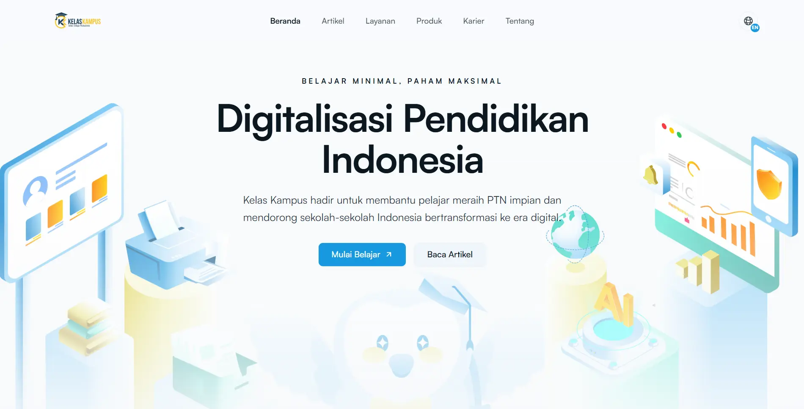
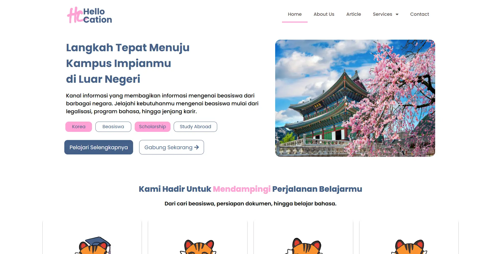
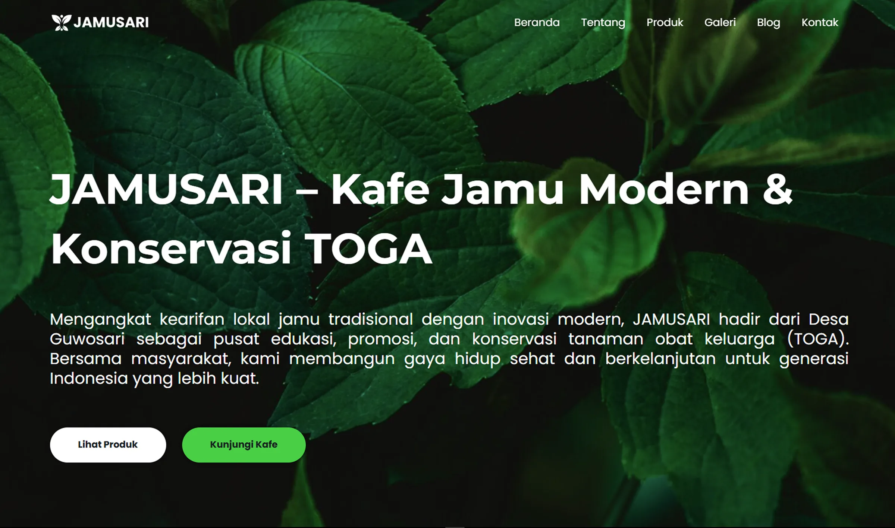
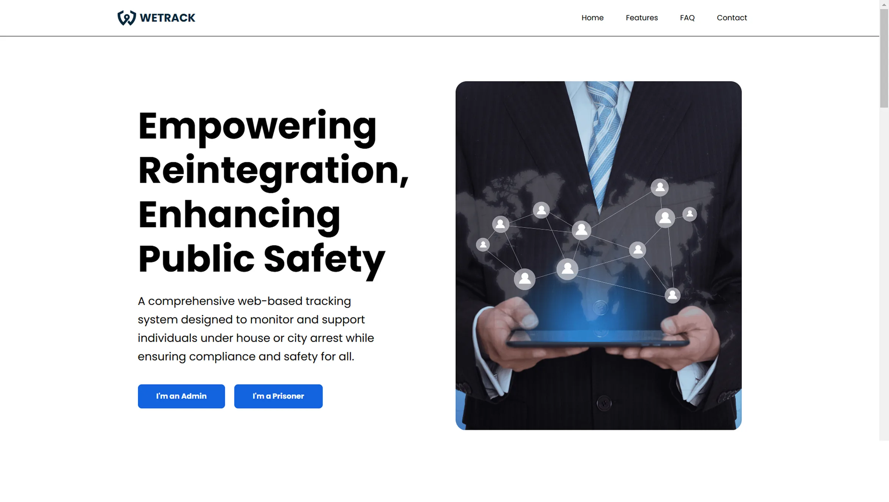
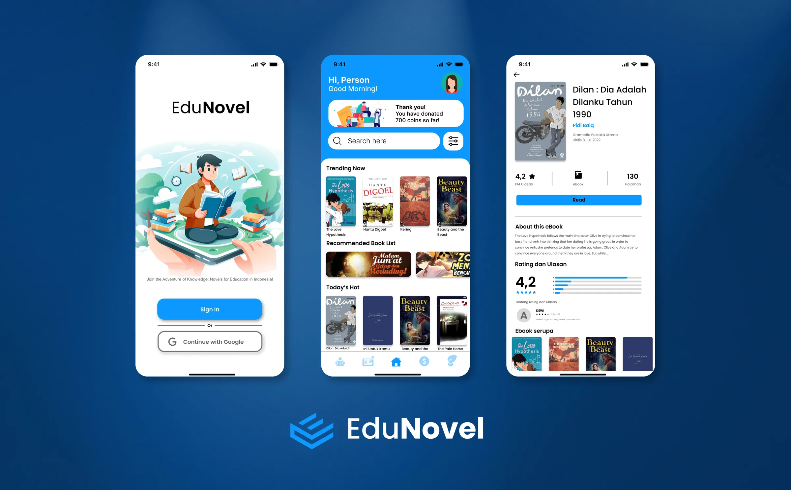

Fullstack web developer,
a developer with a designer's eye
Informatics and Software Engineering student and fullstack web developer. I build interfaces that feel considered, from motion to markup.

I build interfaces that feel considered, where every detail has a reason.
I got into tech by fixing Zoom calls and running live streams at HelloCation. Since then I've redesigned their pages in Figma, built a client's website end to end, and now lead the IT team there. That path taught me to care about the whole product: how it looks, how it's built, and who maintains it after launch.
I build with Next.js, TypeScript, Tailwind CSS and Framer Motion, and backends with Node.js, PHP and PostgreSQL. Right now I'm looking for a web development internship on a team that ships real products.
Indonesian, Javanese, English, 中文

Learn HSK Chinese vocabulary, one radical at a time
Learners preparing for the HSK exams need a way to build and review a large vocabulary. moink groups HSK 1 to 4 words, sourced from the CC-CEDICT dictionary, by their shared radicals and tests them with three quiz modes. I designed and built it, from the ink and calligraphy-inspired interface (Framer Motion and the Canvas API) to sign-in with Firebase Auth and learning data stored in Firestore and Supabase. It is live as a study tool for HSK exam preparation.

Health records, queues and an AI chatbot in one platform
Patient records are often split across facilities, and hospital queues are hard to manage. HealthSync brings electronic health records and cross-facility data into one platform for patients, doctors and administrators, with a real-time queue and an AI health chatbot built on the Google Generative AI SDK. As team lead, I led development on Next.js, Supabase and PostgreSQL and built the real-time queuing system and role-based access control. The result is a working platform that gives each role its own workflow, live on Vercel.

A rebuilt front end and the design system behind it
Kelas Kampus, an exam-prep education platform, was running on legacy pages that needed a consistent UI for a growing student base. During my remote frontend internship (Batch 8), I rebuilt the core pages with Next.js, TypeScript, Tailwind CSS and Framer Motion, moved them to a component-based architecture, and connected them to the backend through a REST API. I also built a design system of reusable components with typography, spacing and color tokens. The platform now has one consistent, responsive UI and a base that makes future pages faster to build.

A remote-team redesign, plus SEO and analytics
HelloCation's website needed modern layouts, a clearer visual hierarchy and consistent branding. As UI/UX designer, I redesigned the Home, About Us, Services, News and Contact pages in Figma. As IT Manager, I then led a remote team of 6 designers and developers from that concept through WordPress staging to launch, and I managed on-page SEO and used Google Analytics to set redesign priorities. The redesigned site is live at hellocation.id, and I keep its server and website running.

A herbal café's home on the web, run by its own staff
Jamusari, a herbal café in Desa Guwosari linked to a medicinal-plant (TOGA) conservation program, needed a website for its “Modern Jamu” brand. I built jamusari.com on my own with WordPress and Elementor, including hosting, the domain on Hostinger, and deployment. I designed responsive layouts for the product catalog, educational blog and conservation gallery, gathered and structured all the content, and set up on-page SEO. The site is live, and the café's non-technical staff were trained to update it without a developer.

Authorities supervising people on conditional release need to know where they are and whether they stay within allowed areas before full release. WETRACK is a web-based monitoring system with real-time location tracking, geofencing that alerts authorities to boundary violations, and role-based dashboards. As team lead, I developed it with PHP, MySQL, JavaScript and Leaflet and designed the multi-user architecture that lets different authorities securely access and manage sensitive tracking data. The finished system covers the full path from tracking to alerting the right authority, and its source is on GitHub.

EduNovel is a gamified learning app from the EduConnect team, built to make studying feel more like play. I designed its user flows, interface and visual theme in Figma. I also made the posters and promo videos that introduced the app. The outcome was a complete app design and a matching set of promotional material for the team.
Available for web developer internships and freelance collaborations. Based in Yogyakarta, Indonesia, studying in Nanjing, China, and happy to work remotely.